型① 朝の一枚
- Mastery Cardを1枚引く。
- 書かれた言葉を、声に出して一度読む。
- その言葉を、今日の「題」にする。
- 題を記録欄に書き、「今日、この言葉をどう生きるか」を一行だけ書き添える。
ひと言その日の終わりに、題が、どんな場面で思い出されたかを、一行だけ書き留めてみてください。思い出されなかった日も、それが記録になります。
迷ったときに、戻る場所。
SAMURAI in You
PDF版をダウンロードこのToolkitは、サムライの流儀である「一つの軸」を、日々の稽古で確かめていくための道具です。
いま持っている知識や経験は、捨てなくていい。
その上に、一枚、重ねるだけです。
道場に通わなくても、相手がいなくても、稽古はできます。カードが、その場をつくります。
このガイドブックは、読み通すためのものではありません。迷ったときに開いて、手順を一つ確かめるためのものです。
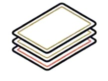
稽古の「相手」。3つのテーマ、各54枚。
キャリア開発（例：役割を越える責任感）
チームビルディング（例：本音で話せない）
事業継続マネジメント（例：停電が起きた場合の対応）
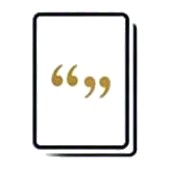
師匠の声。
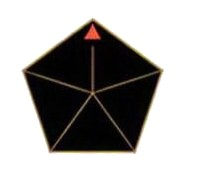
自分の軸を確かめる道具。
迷ったときに戻る手順書。（このページです）
開けた日に、まず一度だけ、この順で稽古してみてください。
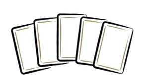
Pentagon Compassから、紺色のSpiritカード5枚を並べる。感情を挟む前に、直感で「今の自分に最も近い」1枚を選ぶ。
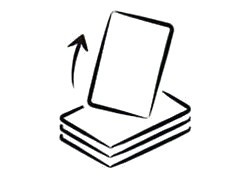
Challenge Cardsから、いまの自分に近いテーマを1枚引く。選んだSpiritを持った自分なら、その場面をどう受けるかを考える。
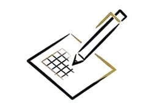
考えたことを、そのまま書く。うまく書こうとしなくて構わない。
書くことが、この稽古の芯です。
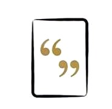
Mastery Cardを1枚引く。書かれた言葉を今日の題とし、書いたものの下に書き添える。
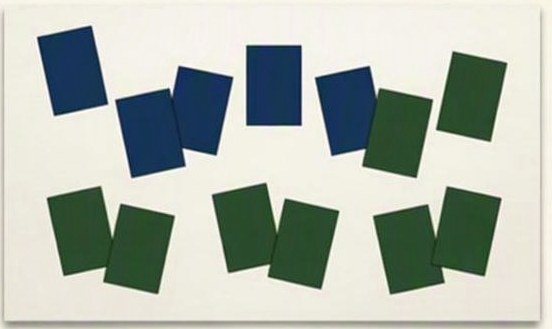
5つのSpiritは、すべてあなたの中にあります。
| Spirit | Skill | 力 |
|---|---|---|
| 自己鍛錬 | 嗜む（Attunement） | 日々備える力 |
| 資質器量（Cultivation） | 人間性を深める力 | |
| 柔軟な適応力 | 有構無構（Adaptability） | 変化に適応する力 |
| 二刀一（Optimization） | 今あるものを活かす力 | |
| 戦略的思考 | 打つと当たる（Discernment） | 自分の行動と偶然を区別する力 |
| 観見（Perspective） | 視野と細部を切り替える力 | |
| 誠実さ | 陰陽の足（Rhythm） | 動と静を使い分ける力 |
| 拍子（Timing） | 適切なタイミングで行動する力 | |
| 平常心 | 虚の心（Objectivity） | 偏見を捨て、判断する力 |
| 心身一如（Psychosomatic） | 心身のバランスを保つ力 |
稽古は、書くことで、積み重なります。次の3つだけ、書いてみてください。
| 日付 | 今日の題 | 自分なら | 気づいたこと |
|---|---|---|---|
| ○月○日 | （カードの言葉・引いた場面） | （一行で構いません） | （なければ、空欄で構いません） |
書き終えたら、手元のノートに続けてください。
| 日付 | 今日の題 | 自分なら | 気づいたこと |
|---|---|---|---|
Toolkitは、稽古の入り口です。
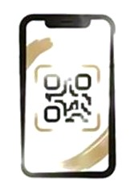
最新の稽古の案内や、体験会の日程をお届けします。

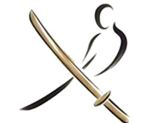
木刀を手に、身体で稽古する日です。Toolkitをお持ちの方には、優待があります。
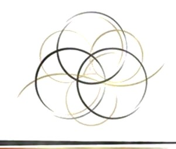
同道者とともに、日々の稽古を続ける場があります。
先生はいません。同道者がいます。
蹴落とし合うのではなく、活かし合う。
あなたの中にも、SAMURAIはいます。
SAMURAI in You
今持っている知識や経験は捨てなくていい。
その上に、東洋の視点を重ねるだけ。